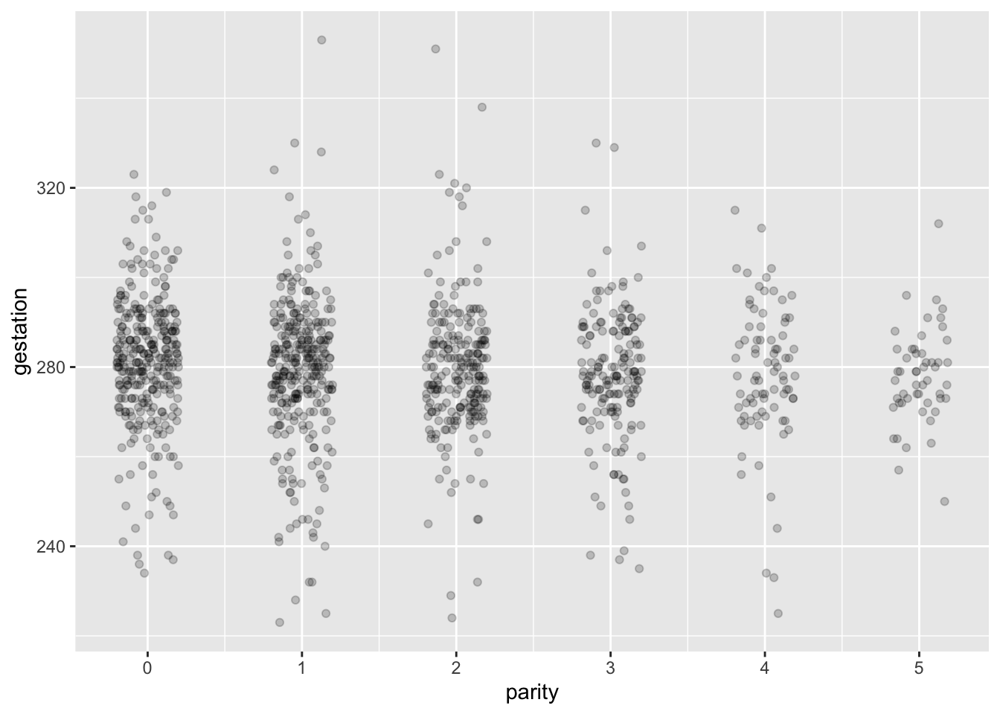
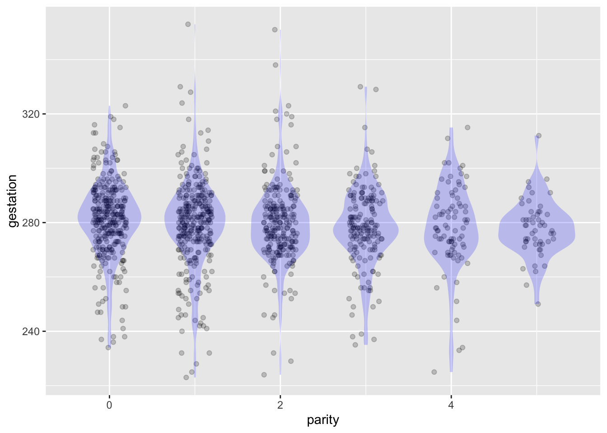
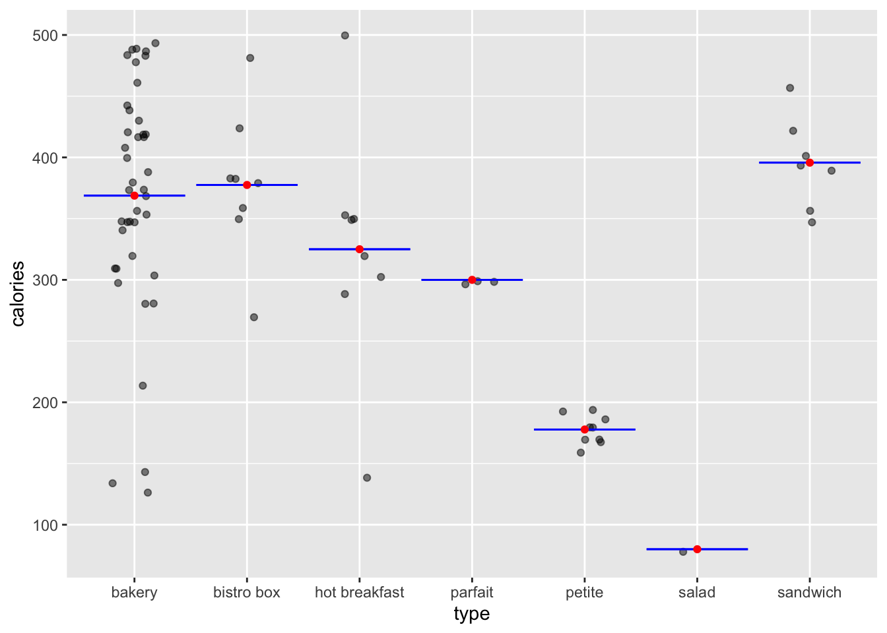
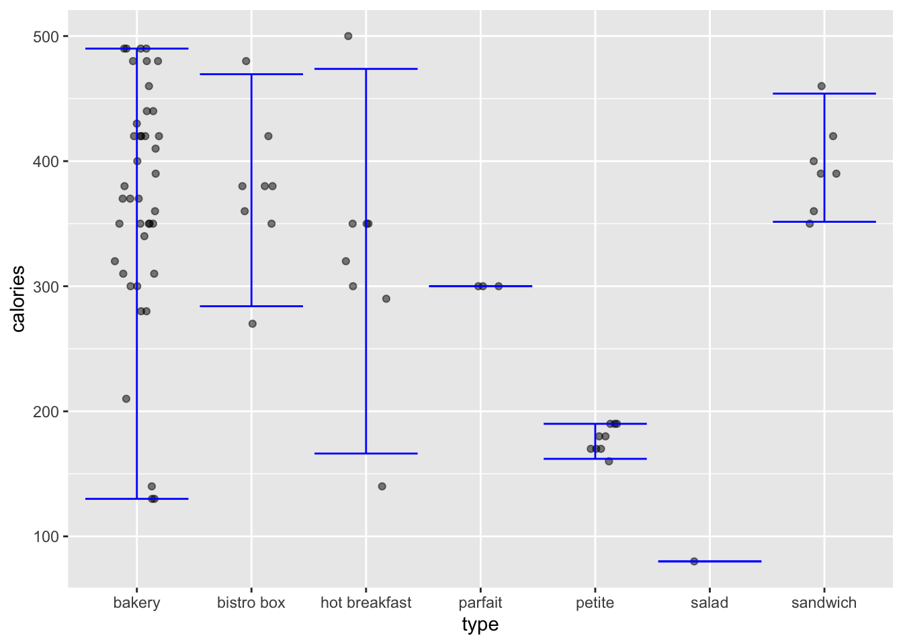
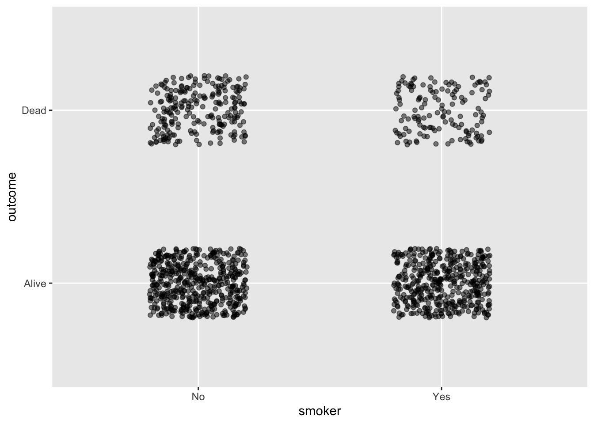
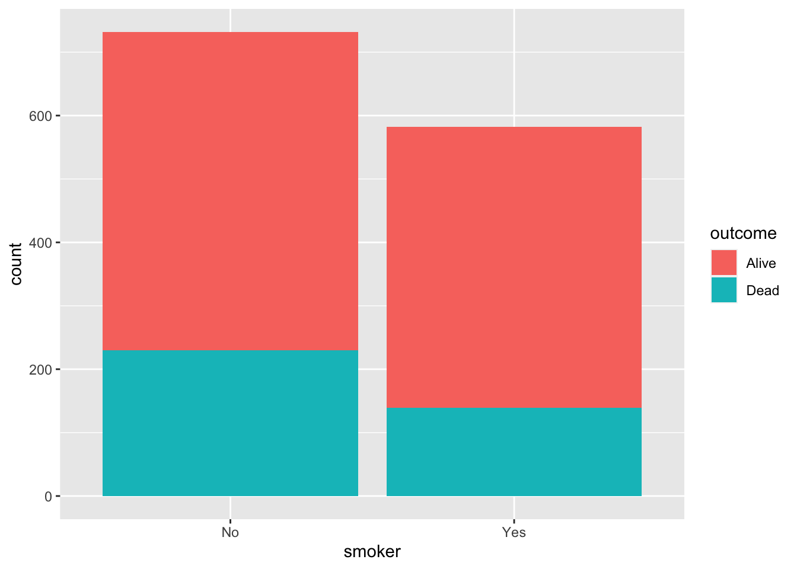
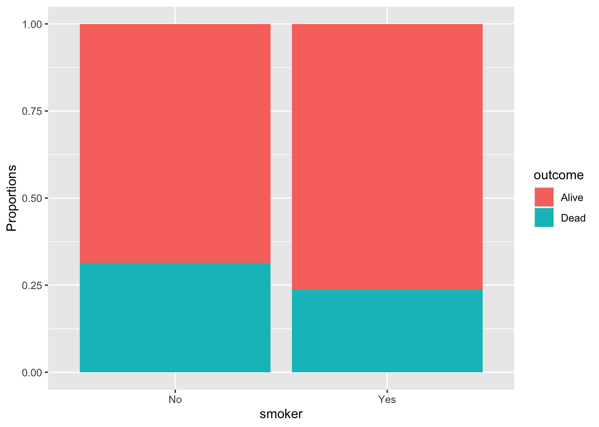
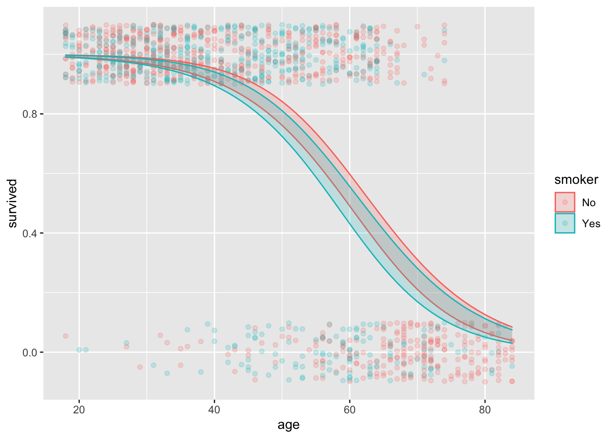

Math 300R Lesson 19 Reading Notes
Statistical thinking
Up to now, you’ve studied three main topics using the OpenIntro textbooks.
- Lessons 2-4 covered making graphics (with
ggplot()) and drew on Chapter 2 of OpenIntro. - Lessons 5-8 covered data wrangling (with
mutate(),inner_join()and its cousins,group_by()summarize(),filter(),arrange()and so on. These lessons drew on Chapters 3 & 4. - Lessons 11-17 covered regression and related topics. There was a huge amount of material in these lessons, covered in Chapters 5 & 6, including
- exploring and summarizing data with graphics and “statistics” such as the mean, median, proportion, and standard deviation.
- building models of data using the
lm()function. Such models are called “regression models” for historical reasons. (The story is fascinating because it comes from a blunder in interpretation of the models, a blunder that is still regrettably common today.) - interpreting models using residuals and coefficients.
- the distinction between “correlation” and “causation.”
Chapters 7 through 10 of OpenIntro cover a topic known broadly as “statistical inference.” If you have studied statistics previously—say in an advanced high-school course—you have learned some of the term of statistical inference, such as “confidence interval,” “p-value,” “statistical significance”, and the “t-test.”
Starting with this lesson, we are going to go in a different direction than OpenIntro Chapters 7-10. Instead of focusing exclusively on statistical inference, we are going to work with a broader idea called “statistical thinking.” Statistical inference is a small part of statistical thinking, and hardly the most important part. Indeed, many statisticians and statistically-savvy scientists believe that statistical inference can be harmful and misleading. We will discuss the good reasons behind this belief in Lesson 38. If you can’t wait, take a look at this article in the prestigious science journal Nature. Figure 1 reproduces a cartoon from that article that puts the shortcomings of “statistical significance” in a historical context.
Statistical thinking
Over the next dozen lessons, you are going to be learning a way of thinking that is historically novel, unfamiliar to most otherwise well-educated people, and incredibly useful for making sense of the world and what data can tell us about the world. Learning a new way of thinking is genuinely hard. One reason is that you will have to suspend some of the familiar, go-to concepts that you’ve learned in school or through your reading.
To get you started with statistical thinking, it will help to have a concise definition of “statistical thinking.” Here’s one I like:
Statistic thinking is the explanation or description of measured variation in the context of what remains unexplained or undescribed.
Implicit in this definition is a pathway for learning to think statistically: first, you need to learn how to use data to describe variation; second, you need to know how to measure “what remains undescribed” and to use that as a context for interpretation; third, you’ll need to understand how “explanation” differs from “description.” The lessons that follow will take you down this path.
This lesson covers a few basic tools that you will be using throughout the remaining lessons.
- A standard, unified format for data graphics that simplifies both the construction and the interpretation of graphics and permits layers of descriptions to be laid on top of a data layer.
- The presentation of descriptions using intervals rather than a number like the mean or proportion.
- A modern mode of displaying one type of description—the “density” (also called the “distribution”) of data—that is compatible with the unified data-graphics format.
- How extend regression modeling, which in Chapters 11-17 of OpenIntro always required a quantitative response variable, to be useful for modeling categorical response variables.
Since this is an introductory course, we will treat only categorical response variables that have two levels, for instance, Alive/Dead, Promoted/Not, Win/Loss, and so on. We will call these types of categorical response variables as “binomial” variables (that is, bi (two) nomial (names)) or “yes/no” variables, or zero/one variables. All of these terms refer to the same idea: a categorical variable with two levels.
Statistical techniques for handling categorical response variables with three or many more levels require more book-keeping and more intricate computer programming. The models used by the machine-learning community are called “classifiers” rather than “regression models.” But limiting ourselves in this course to binomial response variables means that classifiers are indeed regression models.
Unified format for data graphics
The core descriptive technique we will be using is based on regression models. And, as you know, a key paradigm for building regression models is the choice of a response variable and the choice of one or more explanatory variables. (Actually, the previous sentence would be more complete if it said, “the choice of zero or more explanatory variables. You’ll see why a zero explanatory variable model is a useful concept as we move through the rest of the course. It is one of the main ways of”establishing context” for “what remains unexplained or undescribed. But we will cross that bridge when we come to it.)
Since our descriptions will be grounded in regression models, and since we want to be able to generate graphics that show in different layers in the same graphics frame both the raw data and the description, it makes sense to structure data graphics so that there is a response variable displayed as well as one or more explanatory variables. Following convention, we will always display the response variable on the vertical (y) axis, and an explanatory variable on the horizontal (x) axis. If there are other explanatory variables to be displayed, we will use color and faceting.
Another aspect of our unified data graphic format is that it will always be a point plot or, closely related, a jitter plot.
To illustrate the construction of standard-format data graphics, consider the mosaicData::Gestation data frame. You can read about this data frame with the R command ?Gestation. Suppose we want to address the question, “Do experienced mothers have systematically different gestation periods than inexperienced mothers?” For this question, an appropriate response variable is the length of gestation. The explanatory variable needs to measure “experience,” which is a vague idea. We will make it concrete by taking it to mean the number of the mother’s pregnancies prior to the one reported in the data. This is the variable parity and ranges from zero to thirteen.
Now that we know the response and explanatory variable, we can generate the data graphic simply enough:
Gestation %>% ggplot(aes(x=parity, y=gestation)) + geom_point() Warning: Removed 13 rows containing missing values (geom_point).
This graph tells you some things at a glance. A typical gestation period is about 275 days, that is, about 9 months. And you can see that it’s much more common to have a low parity than a high one. But perhaps there is some overplotting that’s hiding the number of low-parity cases. We can easily resolve this by using geom_jitter(), perhaps with some transparency. At the same time, noting that there are very few cases with, say, parity greater than 5, we will focus on the part of the data with parity of zero to five:
Gestation %>%
filter(parity <= 5) %>%
#mutate(parity = as.character(parity)) %>%
ggplot(aes(x=parity, y=gestation)) +
geom_jitter(alpha=0.2, width=0.2, height=0) 
width=0.2 controls the amount of horizontal jittering. We chose it to make the columns of data clear. Also, there’s no need to jitter in the vertical direction, so we set height=0Displaying density
It is easy to see a pattern in Figure 2: It looks like mothers with high parity tend to have gestation periods that are more reliably close to 280 days than for mothers with low parity. Or, maybe this pattern is an illusion. There are so few pregnancies with parity 3, 4, or 5 that we don’t expect to see as many uncommonly short or long gestational periods as for the parities with lots of cases.
One way to explore this idea is to plot the density of the dots as a function of gestation for each of the parity levels individually. A “violin” layer will make it easier to compare the distributions in the different columns, despite the unevenness in the case count. Figure 3 gives an example.
Gestation %>%
filter(parity <= 5) %>%
ggplot(aes(x=parity, y=gestation)) +
geom_jitter(alpha=0.2, width=0.2, height=0) +
geom_violin(aes(group=parity), fill="blue", alpha=0.2, color=NA)Warning: Removed 11 rows containing non-finite values (stat_ydensity).Warning: Removed 11 rows containing missing values (geom_point).
The violin plot is a more flexible display of the distribution of gestation period that would be a histogram. The histogram has all those bars that clutter up the display. Even worse, one of the axes in the frame of a histogram plot is “count” or maybe “density.” Such a frame is not consistent with the unified response/explanatory format we will be using. The violin is drawn in the no-mans-land between the different levels of parity, just as the jittering moves data away from a single vertical line into that same no-mans-land.
This idea of using the graphical no-mans-land between levels of a categorical explanatory variable is not new. You encountered it earlier when you drew box plots. ?@fig-density-box adds a box-plot annotation layer on top of the violin-plot layer.
Gestation %>%
filter(parity <= 5) %>%
ggplot(aes(x=parity, y=gestation)) +
geom_jitter(alpha=0.2, width=0.2, height=0) +
geom_violin(aes(group=parity), fill="blue", alpha=0.2, color=NA) +
geom_boxplot(aes(group=parity), color="blue", fill=NA, alpha=.5)
:::: {.callout-note} ## Violins versus boxes
All of the graphical statistical annotations are human inventions. Each invention attempts to meet a need, but usually the invention is a compromise between the statistical objective and the computational and graphical resources available. The box plot format is a case in point. The statistical goal of a box plot is to display the distribution of values of a variable. It was invented in a time when graphics were mostly drawn by hand and computers were not widely available. The computations behind a box plot produce a five-number summary: min, first quartile, median, third quartile, max. It’s straightforward (but tedious!) to do these by hand since they are based on sorting and counting.The drawing itself uses only straight lines, which are easy to draw by hand with only a pencil and a straightedge.
A violin plot requires hundreds or thousands of evaluations of the gaussian function along with post-processing. They are not feasible for a human; a computer is required. Similarly, drawing the detailed shape of the violin (Figure Figure 3) requires a computer.
The box plot has important deficiencies. It is appropriate only for uni-modal distributions and doesn’t give even a hint of possible bi-modality. The sharp boundaries of the box and endpoints of the whiskers suggest that even smooth density shapes have abrupt transitions. Points are marked as “outliers” in order to keep the whiskers from becoming absurdly long, but box-plots of data with a normal (gaussian) distribution will produce such “outliers” whenever the sample size is large.
When it comes to computing power, we are today unimaginably rich compared to the generation that introduced box plots. In a sense, we are so rich we can use expensive, well made products such as a violin. The box-plot generation was living in computational poverty. Not having the (computational) funds to buy a violin, they had to make do with primitive instruments they had to make do with the materials at hand, just as early blues mucisians, coming out of poverty, often had to build instruments such as a cigar-box guitar.

Describing with intervals
Statistical thinking often involves quantifying uncertainty. One manifestation of this is moving away from single-number “point” summaries such as the mean or median to “interval” summaries. As you will see as we progress through the future lessons, there are many kinds of such intervals, each of which is designed to deal to address a specific question. So you’ll see prediction intervals, confidence intervals, confidence bands, and so on.
For this lesson, we’re concerned only with what interval summaries look like. So let’s generate some, without worrying yet about the computer commands and mathematical underpinnings involved.
Ground rules for “demonstrations”
There will be many occasions in these lessons where we want you illustrate a statistical technique or phenomenon, but we don’t expect the reader to master the commands involved. We will call these demonstrations: something we don’t expect you to do at home. A good way to think about these demonstrations is that you should focus on the outputs from the calculations, rather than the calculation steps themselves. We’ll show you the calculations since some readers might be interested, but focus your attention on the output.
Demonstration: Food at Starbucks
Starbucks is a famous coffee-shop franchise, with more than 30,000 branches (as of 2021) across the world. People go to Starbucks for the coffee, but they often buy something to eat as well. Let’s look at the calorie content of Starbucks’ food offerings. As always, when conducting a statistical analysis, it’s helpful to have in mind the purpose for the task. We’ll imagine, tongue in cheek, that we want to make food recommendations for the calorie conscious consumer.
First, a point summary of the calories in the different types of food products available at Starbucks:
point_summary <- df_stats(calories ~ type, data = openintro::starbucks, mean)
point_summary response type mean
1 calories bakery 368.7805
2 calories bistro box 377.5000
3 calories hot breakfast 325.0000
4 calories parfait 300.0000
5 calories petite 177.7778
6 calories salad 80.0000
7 calories sandwich 395.7143This summary supports the common-sense advise that to avoid calories, focus your choices on salads or on smaller portions (type “petite”). You might be tempted to go further, for example concluding that a sandwich is a bad choice (in terms of calorie content) so lean toward parfaits or hot breakfasts. You can even imagine someone concluding from this summary that a bistro box is a better calorie-conscious choice than a sandwich.
A graphic showing both the point summary and the raw data can put things in a useful context.
openintro::starbucks %>%
ggplot(aes(x=type, y=calories)) +
geom_jitter(width=0.2, alpha=0.5) +
geom_errorbar(data=point_summary, aes(ymin=mean, ymax=mean), y=NA, color="blue") +
geom_point(data=point_summary, aes(y=mean), color="red")
We’ve shown the point summary as red dots, one for each food type. A somewhat stronger visual impression is given by drawing the point summary not as points, but as lines that extend into the no-mans-land between food types. These are drawn in blue and they make the red dots superfluous; you don’t need both.
Plotting the point summary in the context of the raw data shows at a glance that the point summary is not of any use beyond the common sense advice to eat salads and small portions if you are trying to avoid calories. With the point summary on its own, we were tempted to conclude that, say, hot breakfasts are a better choice than sandwiches, but the data display suggests otherwise; there’s just one low-calorie breakfast. The others are much like sandwiches.
A point summary is compact, but it fails to take into account the variation within each food type.
An interval summary does take into account this variation. This is an important aspect of statistical thinking. Recall the definition of statistical thinking given earlier:
The explanation or description of measured variation in the context of what remains unexplained or undescribed.
There are several kinds of interval summaries. You’re not yet in a position to know which kind is the appropriate one for the task at hand—giving advice about food choices based on food type—so we’ll tell you: a prediction interval.
interval_summary <- df_stats(calories ~ type, data = openintro::starbucks, coverage(.95))
interval_summary response type lower upper
1 calories bakery 130.00 490.00
2 calories bistro box 284.00 469.50
3 calories hot breakfast 166.25 473.75
4 calories parfait 300.00 300.00
5 calories petite 162.00 190.00
6 calories salad 80.00 80.00
7 calories sandwich 351.50 454.00Or in graphical form:
openintro::starbucks %>%
ggplot(aes(x=type, y=calories)) +
geom_jitter(width=0.2, alpha=0.5, height=0) +
geom_errorbar(data=interval_summary, aes(ymin=lower, ymax=upper), y=NA, color="blue") 
Unlike point summaries, interval summaries can overlap. Such overlap is an indication that the groups being summarized are not all that different. Here, an appropriate conclusion indicated by the interval summary is, “Don’t make your diet choices based on food type. Look at the calorie content of individual items before making your choice.”
Admittedly, in this simple setting the data themselves would lead to the conclusion. But as we move into more complicated settings, it will become infeasible to quickly see patterns straight from the data. In these complicated settings, summaries are an important tool for displaying and quantifying patterns. The statistical thinker knows to prefer interval summaries.
Categorical response variables.
Our last topic in this lesson is relatively simple: the zero-one transformation of categorical variables which allows regression and related techniques to be used for categorical response variables.
To illustrate, let’s use data collected in the 1970s to study the relationship between smoking and mortality. The data we’ll use, mosaicData::Whickham, recorded for one-thousand nurses whether or not they smoked at the time of the initial interview and whether or not they were still alive twenty years after the initial interview.
Here’s a graph of the data in our standard response-vs-explanatory graphic frame:
Whickham %>%
ggplot(aes(x = smoker, y = outcome)) +
geom_jitter(width=0.2, height=0.2, alpha=0.5)
The graph suggests that non-smokers were more likely than smokers to be dead at the follow-up interview. But it’s hard to calculate proportions from such a graph. It’s reasonable to argue that for the purpose of showing the fraction of smokers and of non-smokers who died, a bar chart would be better.
Whickham %>%
ggplot(aes(x=smoker, fill=outcome)) +
geom_bar()
Whickham %>%
ggplot(aes(x=smoker, fill=outcome)) +
geom_bar(position = "fill") +
ylab("Proportions")

Whickham data.The left barplot, showing counts, suggests that a higher proportion of non-smokers died than of smokers. But its easy to instruct the geom_bar() to graph proportions rather than counts, as done in the left plot. This makes it easy to conclude at a glance that a higher proportion of non-smokers have died.
The important question here, “Does smoking affect mortality?” translates well into the response/explanatory paradigm: outcome is the response variable while smoker is the explanatory variable. In the jitter-plot presentation of the data, these assignments are clearly indicated in the computer commands, which set x=smoker, y=outcome. In the barplot, a different notation is used: x=smoker, fill=outcome.
Unfortunately, neither of the graphic styles—jitter or boxplot—answers the important question. At best they provide a description of the nurses in the Whickham data frame.
To answer the important question, we need to invoke statistical thinking. In particular, we need an interval summary of the proportion who died, not the point summary produced by the barplot.
This doesn’t mean that we can’t easily calculate the proportions from the categorical response variable: we just have to use the right commands. for instance:
Whickham %>%
df_stats(outcome ~ smoker, prop, ci.prop) response smoker prop_Alive lower center upper
1 outcome No 0.6857923 0.6507824 0.6857923 0.7192969
2 outcome Yes 0.7611684 0.7243939 0.7611684 0.7952677The point summary—the prop_Alive column—suggests an obvious difference between the smokers and non-smokers. The interval summary—columns lower and upper—tempers this conclusion a little: the intervals almost touch.
Although regression is our go-to technique for modeling relationships between variables, we can’t use it directly on a categorical response variable. Here’s what happens if we try:
lm(outcome ~ smoker, data = Whickham) %>% confint()Warning in model.response(mf, "numeric"): using type = "numeric" with a factor
response will be ignoredWarning in Ops.factor(y, z$residuals): '-' not meaningful for factorsWarning in Ops.factor(r, 2): '^' not meaningful for factors 2.5 % 97.5 %
(Intercept) NA NA
smokerYes NA NAThe computer’s warning message is a reminder that the response variable is categorical. (The message uses the phrase “factor response,” which is just computerese for “categorical response.”)
We can fix things with a simple trick: trasforming the response variable to a zero-one encoding. In the following, we’ll use 1 to represent "Alive" and 0 to represent "Dead", although we can equally well do things the other way around.
lm(zero_one(outcome, one="Alive") ~ smoker, data = Whickham) %>% confint() 2.5 % 97.5 %
(Intercept) 0.65329520 0.7182895
smokerYes 0.02654662 0.1242054You don’t yet know enough to interpret this interval summary. That will have to wait until Lesson 24. The significant1 feature of the interval on smokerYes is that it does not include zero. In everyday terms, the interval means, “Smokers are 3 to 12 percentage points more likely to survive for 20 years than are non-smokers.”
Using interval summaries instead of point summaries is an important aspect of statistical thinking, but there are other aspects that need to be taken into account. A simple, but important, question is whether the nurses recorded in the Whickham data frame are good representatives of all smokers. (It turns out that the nurses in Whickham are all women interviewed in the 1970s. At that moment of history, women were very different than men when it comes to smoking, and the Whickham smokers were also very different from today’s female smokers. We’ll say more about this in the demonstration below.)
Statistical thinking also leads one to ask another sort of question: What else might be going on other than smoking? In technical language, the other-goings-on are called “covariates,” the topic of Lessons 28 & 29.
For instance, you might wonder about the overall result from our brief examination of the Whickham data. Is it really the case that the smokers were more likely to survive than the non-smokers? The answer is “yes,” as we have demonstrated from the previous analysis. But this answer is completely misleading. Tobacco companies worked hard to mislead people into thinking that smoking was not dangerous. They knew full well the negative health consequence of smoking, but they used statistical-sounding claims to hide this knowledge from the public.
In the following demonstration, we’ll look at the Whickham data again using the power of regression models to incorporate covariates.
Demonstration: Smoking with covariates
Remember that you are not expected to master the calculations in these demonstrations. Focus your attention on the output from the calculations.
It goes without saying that smoking is not the only thing that kills people. There are other risky behaviors such as heavy drinking, there’s environmental exposure to pollutants, and there’s disease (other than the smoking induced ones of lung cancer, emphasema, and high blood pressure). But there’s one risk factor for death that everyone knows about but nobody is doing anything about: getting old.
In virtually every public health or clinical study, the participants’ age is taken into account. Not doing so can produce a completely misleading view of the situation. This is also the case with smoking and mortality in the Whickham study.
Regression techniques enable us to take multiple explanatory variables into account. In this demonstration, we’ll use regression to study outcome as a function of smoker and, importantly, age.
To get started, we need to remember to convert the categorical outcome variable into a zero-one encoding. After that, building the model is not so hard.
survival_model <- Whickham %>%
mutate(survived = zero_one(outcome, one="Alive")) %>%
model_train(survived ~ age + smoker, data=.)From this model, we can read off an interval summary of the effect of smoking on survival:
survival_model %>% confint() 2.5 % 97.5 %
(Intercept) 6.7686824 8.5002535
age -0.1382922 -0.1101260
smokerYes -0.5369777 0.1238805A full understanding of this interval summary will need to wait until Lessons 22 through 24. For the present, we’ll simply point out that the summary interval on smokerYes includes zero, so Whickham provides no support for the mistaken conclusion that smoking improves survival. But seeing this requires taking into account age. A graphic may help explain why:
Model_output <- model_eval(survival_model, interval="confidence")
Model_output %>%
ggplot(aes(y = survived, ymin=.lwr, ymax=.upr, x=age, color=smoker, fill=smoker)) +
geom_jitter(height=.1, width=0, alpha=0.2) +
geom_ribbon(alpha=0.2) 
The interval summary in the graph shows how the probability of survival changes for different ages. The intervals for non-smokers and smokers entirely overlap. For both groups, 20-year survival goes down with greater initial age. So why did the model outcome ~ smoker suggest that smokers have a higher survival? The reason relates to the proportion of smokers with initial age 70+. In the 1970s, life expectancy was such that people 70+ were unlikely to survive 20 years. This pulls down the survival rate at that age. Notice that the 70+ nurses were unlikely to have been smokers compared to younger nurses. The 70+ nurses grew up in an era when social conventions caused smoking to be uncommon for women (even though it was very common for men).
Footnotes
In lesson 38 you’ll learn to be wary whenever a statistician uses the word “significant.”↩︎